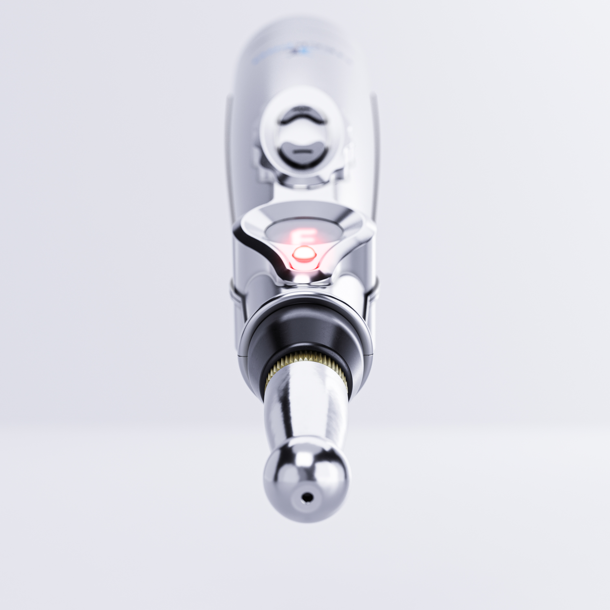

They Said It Was Just Tension. But I Was Suffering in Silence.
"You're Fine, It's Just the Stress."
That's what Angela kept hearing.
from her obstetrician, her family doctor, even her husband.
But nothing felt fine.
Angela was 33, a stay-at-home mom with two toddlers under five.
Her days were a blur of pickups, snacks, tantrums, and laundry.
And her nights? Sleepless. Not because of the kids — but because of the pain.
It Started After Her Second Pregnancy.
A deep stiffness at the base of her skull. A burning line down her shoulders. A tightness that wouldn't let go.
At first, she ignored it. She was used to being sore — what mom isn't?
But the ache didn't go away.
It got worse.
Soon, lifting her daughter into the car seat sent a flash of pain down her arm.
Turning her neck to reverse out of the driveway became a 3-point ordeal.
And carrying groceries or bending over the crib? Sometimes unbearable.
She started leaning on Advil.
Then ibuprofen gels.
Then naproxen.
Eventually, she was cycling 3–4 types of NSAIDs daily, just to get through the chaos of her morning routine.

She told herself it was temporary. But it wasn't.
Her stomach felt constantly bloated.
Her mood was flat.
She began losing her temper faster — not because she was angry, but because she was exhausted and chemically dulled.
She started forgetting things.
Missing appointments.
Pulling away from her husband.
Snapping at the kids.
It wasn't just the pain.
It was what the pain — and the meds — were doing to her.
What Hurt More Than the Pain?
Nobody believed her.
Her MRI was normal.
Her doctor called it "typical muscle tension."
"Maybe you just need a break."
But breaks don't exist when you're a mom. And pain doesn't wait for permission.
Angela stopped complaining.
She smiled through it. She kept moving.
Until one day, her son hugged her from behind — and she flinched.
That moment broke her.
Not from the pain.
But from the guilt of pulling away from her own child.
The Real Reason Nothing Helped
Angela tried everything:
- Massage therapy
- Ice and heat
- Postnatal yoga
- Physical therapy
- Topical creams
- Chiropractic
- Even new pillows and fancy sleep positions
But nothing worked for more than a day or two.
Here's why:
Because the problem wasn't on the surface. It was deeper.
What Angela had — what millions of women silently suffer from — is a condition doctors rarely talk about:
MPS is caused by trigger points — deep, knotted muscle fibers that form when the body is overloaded and under-recovered.
- They choke blood supply, starving muscles of oxygen
- They squeeze nerves, sending pain signals that spread into other areas
- They lock muscles in a half-contracted state, making it nearly impossible to fully relax
And radiate pain in patterns no scan can detect.
Angela's body wasn't broken. It was trapped.
Trapped in a loop of overworked muscles, poor posture, stress tension, and endless micro-trauma — from pregnancy, carrying babies, hunching over sinks and car seats and tiny shoes.
The result?
A silent, crushing kind of pain.
The kind that steals your patience. Your sleep. Your softness. Your ability to just be present.
Why Nothing Ever Really Worked
Angela wasn't lazy. She wasn't ignoring advice.
She tried everything.
Physical therapy, massage, dry needling, posture hacks, new pillows.
Some things helped for a day. But nothing ever lasted.
Here's why:
So even when you stretch or rest, those deep knots stay stuck.
Your brain keeps firing "something's wrong" signals.
Your neck stays tight. Your nerves stay irritated.
And your pain comes back — like it never left.
That's why Angela's massages didn't stick.
Why her meds wore off in hours.
Why the PT exercises made her sore but not better.
None of them addressed the real issue:
You can't out-stretch or out-medicate your way out of a locked-up muscle.
You have to break the pain cycle from inside the muscle — and inside the nervous system.
That's exactly what NeckPro was built to do.
What Changed Everything
Angela's breakthrough came when she was introduced to a device designed specifically for chronic neck pain caused by MPS — not the usual posture stuff or pain relief patches.
It's called NeckPro.
And it works by doing one thing no other treatment she tried could:
It disrupts the pain at its root.
How It Works (Mom-Tested, Science-Backed)
NeckPro uses safe, targeted electrical stimulation — the same technology trusted by physical therapists — to calm overactive nerves and unlock deep muscle knots from the inside out.
When placed over the neck's most common trigger points, it:
- Sends rhythmic pulses deep into the muscle
- Reboots nerve signals that have been firing pain for months
- Restores blood flow to bring oxygen, remove waste, and heal tissue
- Helps the muscle let go — like finally exhaling after being stuck in a cringe
It doesn't just mask pain.
It helps retrain your body to stop creating it.
Angela started using it twice a day, 15 minutes at a time — while folding laundry, scrolling through bedtime routines, or catching her breath after a long day.
She didn't expect much. But here's what happened…
Here's What It Looks Like in Real Life
Angela's Transformation
Week 1
The pain didn't vanish. But something shifted.
She wasn't waking up in a fog. The morning tension — that crushing band around her upper spine — was lighter.
She didn't snap at the kids over spilled juice. She had a little more space in her body. And in her patience.
It felt like… breathing room.
Week 2
The flares became less sharp. She could turn her head more freely.
She wasn't bracing every time she reached for the back seat or leaned over the crib.
She caught herself humming while doing dishes.
A small thing — but it had been months since she felt light enough to hum.
Week 3
The pain no longer ruled her schedule.
She didn't cancel the park day. She didn't panic when the kids asked to be picked up and spun around.
She flinched less. Smiled more.
Even her husband noticed:
"You seem… more like yourself again."
And she was.
Week 4
Something clicked.
She wasn't dragging herself through the day anymore — she was moving through it.
Present. Capable. Calmer.
The tension wasn't just easing — it was leaving.
That was the moment Angela knew:
"This isn't just relief. This is me coming back."
The Relief They Thought They'd Never Find
What Is This Pain Really Costing You?
- 💸 Chiropractor sessions?
$90–$120 each — and the tension creeps back by bedtime. One session a week? That's up to $480/month. - 💸 Massage therapy?
$70–$90 per visit, often weekly — just for temporary relief that fades before your next appointment. - 💸 Pain meds, gels, and creams?
$150–$200/month on pills that wreck your stomach, blur your focus, and never solve the root issue. - 💸 Specialist visits?
$800–$1,200 a year — usually to be told your scan "looks fine." - 💸 Missed work. Missed moments. Unexpected help.
The hidden cost of chronic pain isn't just financial — it steals presence, peace, and freedom.
Now stretch that out across 12 months.
You're looking at $3,000–$5,000 per year, just to cope.
By every moment you've missed because your body just couldn't keep up.
And here's the kicker:
Even after all that — you're still in pain.
Now let's compare that to NeckPro:
- A one-time cost of $64.99
- Built by real pain experts
- Based on science, not guesses
- Just 15 minutes a day from your couch
No prescriptions.
No appointments.
No side effects.
No pressure.
And most importantly:
No more waiting for someone else to fix you. This isn't just a tool — it's the first real step toward getting your life back.
For less than the cost of one massage...
You get back control.
You get back your energy.
You get you back.
How Much More Are You Willing to Lose?
You don't mean to snap at your kids — but you do.
You don't want to cancel plans again — but you will.
You don't want to keep surviving the day instead of living it — but it's happening.
And the worst part?
Nothing changes until you do something about it.
This condition won't "work itself out."
The pills won't suddenly start healing.
And the time you're losing — with your family, your body, your self — you don't get it back.
Let this be the day you draw a line.
Not just for your pain — but for the version of you that's been waiting to come back.
Because here's the truth:
You can keep living with this pain...
Or you can start reversing it today.
The next 40 days can either look exactly like the last 40...
Or they can be the beginning of the breakthrough you've been begging for.
Don't wait until it's worse.
Don't wait until you feel broken.
Don't wait until one more "maybe tomorrow" becomes never.
This is your shot. Take it.
40 Days to Feel Better — Or You Pay Nothing
Let's be honest.
You've probably seen guarantees before.
"Try it risk-free!" — only to hit hidden terms, tricky return rules, or ghosted support emails.
We hate that stuff, too.
That's why we made our 40-Day Money-Back Guarantee different — actually real. Actually fair.
Here's exactly how it works:
- You try NeckPro for up to 40 days.
- You use it just 15 minutes a day — like we show you.
- If you don't feel a noticeable difference — even a small shift — you email us.
- No return shipping. No forms. No call centers.
- We refund 100% of your money.
- No fine print. No catch. No pressure.
Why We're Confident Enough to Do This
Because NeckPro wasn't whipped up overnight.
It was built by physical therapists, after years of clinical insight and hands-on patient work.
It's helped real people — moms, workers, everyday humans — break out of pain cycles that stole years of their life.
So we don't need to "trap" you with gimmicks.
We let the results speak.
If it doesn't help you? You walk away with your money. Simple.
⚠️ Don't Wait Until the Damage Is Permanent
Every week you delay — every morning you push through — you're reinforcing the pain pattern that's already robbing you of your energy, your clarity, and your life.
Trigger points don't just fade with time.
They dig in.
They adapt.
And eventually, they become chronic — harder to undo, deeper in the tissue, more resistant to even professional care.
And the longer you wait, the more you pay:
More pills to get through the day
More apologies for snapping at people you love
More guilt over missing moments you should've been there for
More damage to your nerves, sleep, focus, and identity
This doesn't fix itself. And no one's coming to do it for you.
But today, right now — you're still early enough to reverse it.
You still have the chance to interrupt the cycle.
Final Word: You've Waited Long Enough
If you've read this far, one thing is clear:
You're done living like this.
Done pretending you're fine when you're not.
Done pushing through pain just to get through another day.
You've done everything right.
You tried to rest.
You tried to stretch.
You stayed strong for everyone else.
But now it's your turn.
You don't need one more opinion.
You need relief — something real.
Something built for people like you.
That's why NeckPro exists.
It's not a gimmick. It's not another Band-Aid.
It's a tool — built by experts, tested by real people, and trusted by those who had nowhere else to turn.
And right now, your next 40 days are in front of you.
They can look exactly like the last 40 — same pain, same exhaustion, same cycle.
Or they can be the beginning of the breakthrough you've been praying for.
You don't need to wait for permission to feel better.
You just need to start.
You've waited long enough.